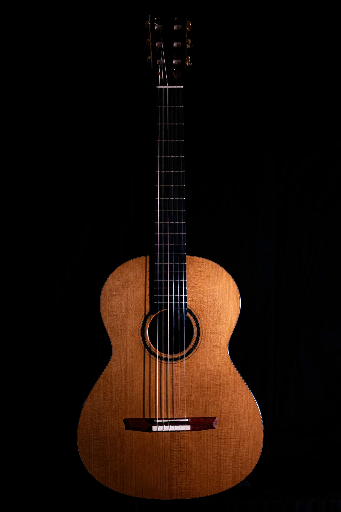

Christopher Daisuke
Luthier
A lot of consideration is also given to the structure and the way they are built, using both traditional and modern approaches—not only to achieve a richer sound and great playability, but also to ensure they age well.
Besides the dedication to making a quality guitar, my desire is to create instruments that people feel emotionally attached to, so that players can feel a deeper joy of expression through music.

Top: European Spruce, Engelmann Spruce, Lutz Spruce, Red Cedar
Back and sides: Mostly traditional choices like Indian Rosewood or Maple but I like to use variety of wood.
Fingerboard: Ebony
Bridge: Sapele (12 hole)
Neck: Honduran Mahogany
Binding: Ebony, same wood as back and sides etc
Scale: 650mm
Neck Width: 52mm
Frets: Jescar FW55090 NiS 18%
Tuning Machine: Gotoh 35G510C
Specifications
Many things can be customized to the customer’s request. I love giving every guitar a unique personality.Top: European Spruce, Engelmann Spruce, Lutz Spruce, Red Cedar
Back and sides: Mostly traditional choices like Indian Rosewood or Maple but I like to use variety of wood.
Fingerboard: Ebony
Bridge: Sapele (12 hole)
Neck: Honduran Mahogany
Binding: Ebony, same wood as back and sides etc
Scale: 650mm
Neck Width: 52mm
Frets: Jescar FW55090 NiS 18%
Tuning Machine: Gotoh 35G510C